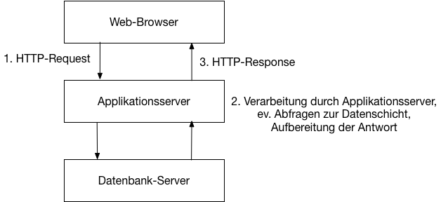
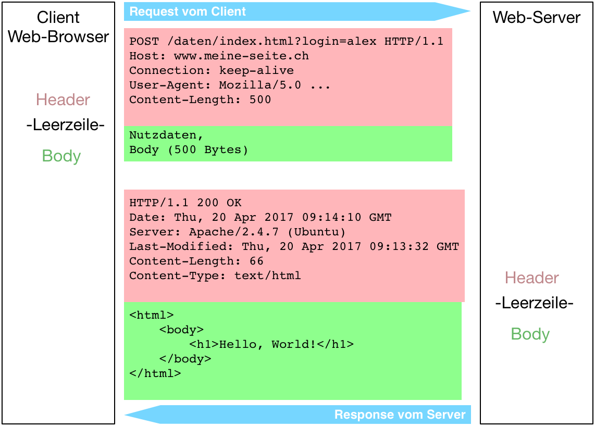

{% extends "../_base_template.html" %}
{% block title %}Lektion 2 - Web-Architektur{% endblock %}

{% block sections %}
<section data-markdown>
<textarea data-template>
<i class="fas fa-graduation-cap"></i> M151 - DB in Web-App einbinden
=============================

Heutiges Ziel
--------------

* Sie kennen die Web-Architektur
* Sie wissen, wie HTTP-Requests / Responses funktionieren
* Sie kennen den Unterschied zwischen statischen / dynamischen Seiten
</textarea>
</section>

<section data-markdown>
<textarea data-template>
<i class="fas fa-graduation-cap"></i> Web-Architektur - was ist das?
=============================


Die grundlegende Web-Architektur ist in 3 "Tiers" (Stufen, Schichten) aufgeteilt:

* Client: Web-Browser, Darstellung und View-Logik
* Applikationsserver: Applikationslogik, Auslieferung der View (Web-Seiten)
* Datenbank-Server: Persistierung der Daten

Jede Schicht kann in sich auch komplexer ausgelegt werden (Redundanzen, komplexe Datenbank-Struktur, etc.), der Grundaufbau ist jedoch immer derselbe.

In unserem Fall verwenden wir:

* HTML/CSS/JavaScript auf der View-Seite (im Browser)
* Apache Web-Server mit PHP-Modul auf der Applikationsserver-Seite
* MySQL-Datenbank auf der Persistenz-Seite
</textarea>
</section>


<section data-markdown>
<textarea data-template>
<i class="fas fa-graduation-cap"></i> Ablauf eines Web-Requests
=============================




1. Der Client sendet einen **HTTP Request** zum Server. Der Request beinhaltet die notwendigen Informationen, damit der Server "weiss", was er zu tun hat:
  * eine **URL** identifiziert die angeforderte Ressource
  * Zusatzdaten werden als URL-Parameter oder Post-Body geliefert
2. Der Server nimmt den Request entgegen, analysiert ihn und übergibt die Information der Applikationslogik.
   Je nach Logik / Anforderung muss der Server nun Datenbank-Anfragen ausführen, Dateien suchen, Daten aufbereiten.
   In jedem Fall bereitet er eine Antwort vor in Form eines:
3. **HTTP Response**: Der Server sendet seine generierte Antwort in Form einer HTTP Response. Die Response beinhaltet:
  * einen Status-Code (**HTTP-Code**)
  * Meta-Informationen zur Response (**Header** Länge der Antwort, Datentyp etc.)
  * die eigentliche Information im **HTTP Body**

<i class="far fa-hand-point-right"></i> Web-Requests gehen IMMER vom Client aus. Der Server macht nicht von sich aus Requests zum Client.
</textarea>
</section>

<section data-markdown>
<textarea data-template>
<i class="fas fa-graduation-cap"></i> Übung / Quiz zu HTTP-Requests
=============================

Wir kennen nun den grundsätzlichen Ablauf eines HTTP-Request - doch wie sieht dies im Detail aus? Wir wollen dies praktisch erfahren.

<strong><i class="far fa-hand-point-right"></i> Quiz auf Moodle (Quiz HTTP-Requests)</strong>

Zeit: ca. 15-20min

<div class="fragment">
<strong>Bonus:</strong> Untersuchen Sie mit der Netzwerkkonsole die Seite https://www.20min.ch/ . Was fällt Ihnen auf?
</div>

</textarea>
</section>

<section data-markdown>
<textarea data-template>
<i class="fas fa-graduation-cap"></i> Aufbau einer URL
=============================


Die **URL** (Uniform Resource Locator) definiert, welche „Ressource“ der Client anfordert. Es ist eine Art "Postadresse". Es ist nun Aufgabe des Web-Servers, die richtige Ressource (Web-Seite, Bild, Datei, JSON-Antwort etc.) aufzubereiten und auszuliefern. Sie besteht aus folgenden Teilen:

* Protokoll/Schema: welches Protokoll wird für den Aufruf verwendet? (http, https, ftp …)
* Host: Adressierung des (physischen) Hosts: die „Hausadresse“ des Webservers
* Pfad: Adressierung der Ressource innerhalb des Hosts: die „Wohnungsadresse“ innerhalb des Hauses
* Parameter: Zusätzliche Informationen, nicht Teil der Adresse der Ressource
* Fragment: Client-seitige Information (z.B. Seiten-Anker), für Server nicht relevant

**Frage**:

Welche Teile der Information einer URL ist für den **Client** (Absender), welche Teile für den **Server** (Empfänger) wichtig?

* <!-- .element: class="fragment" data-fragment-index="1" -->Protokoll, Host, Fragment: wird für den <strong>Client</strong> für die Adressierung benötigt.
* <!-- .element: class="fragment" data-fragment-index="1" -->(Host,) Pfad, Parameter: wird für den <strong>Server</strong> für die Identifizierung der Ressource benötigt.
</textarea>
</section>


<section data-markdown>
<textarea data-template>
<i class="fas fa-graduation-cap"></i> HTTP Request / Response
=============================

<div style="display:flex;align-content:flex-start">

<div>
    <ul>
        <li>Der <strong>REQUEST</strong> wird vom Client initiiert und teilt dem Server mit, was er von ihm will.</li>
        <li>Der Server lokalisiert / generiert die Ressource und antwortet mit einer RESPONSE.</li>
        <li>Die erste Zeile des <strong>REQUEST</strong> Headers besteht aus:
            <ul>
                <li><strong>HTTP-Verb</strong> (GET, POST, PUT, DELETE)</li>
                <li>Ressourcen-Pfad</li>
                <li>Parameter</li>
            </ul>
        </li>
        <li>Ein Request Body wird nur im POST/PUT-Fall gesendet.</li>
        <li>Die <strong>RESPONSE</strong> besteht immer aus:
            <ul>
                <li>Header:
                    <ul>
                        <li>erste Zeile: HTTP Response Code (200 = OK, 403 = Not found etc)</li>
                        <li>weitere Header</li>
                    </ul>
                </li>
                <li>Leerzeile</li>
                <li>Response Body</li>
            </ul>
        </li>
    </ul>
</div>
</div>

<i class="far fa-hand-point-right"></i> Schauen Sie sich einen Request / Response in der Browser-Debug-Konsole an!
</textarea>
</section>


<section>
<section data-markdown>
<textarea data-template>
<i class="fas fa-graduation-cap"></i> Verarbeitung durch den Web-Server / PHP
=============================

Wir unterscheiden zwischen **statischen Seiten** und **dynamischen Seiten**:

* Statische Seiten: Der Web-Server liefert eine bereits vorhandene Datei ohne Modifikation aus (Bilder, HTML-Files, ....)
* Dynamische Seiten: Der Web-Server übergibt das angeforderte Script an einen Prozessor (in unserem Fall PHP): Dieser arbeitet das Script ab,
  welches eine Antwort generiert. Der Web-Server liefert diese Script-Antwort aus.

**Beispiel statische Seite**

Der Web-Server liefert (HTML-)Dateien mit fixem Inhalt aus:
Beispiel: index.html:

```html
<html>
    <head><title>Hello</title></head>
    <body>
        <h1>Hello, World!</h1>
        <p>Es ist genau: 27. Juni 2018, 09:22</p>
    </body>
</html>
```
</textarea>
</section>

<section data-markdown>
<textarea data-template>
<i class="fas fa-graduation-cap"></i> Verarbeitung durch den Web-Server / PHP
=============================
**Beispiel dynamische Seite mit PHP**

Der Web-Server prozessiert das Script-File mit dem PHP-Interpreter, und liefert das Endresultat aus:
Beispiel: index.php:

<pre><code class="html"><script type="text/template">
<html>
    <head><title>Hello</title></head>
    <body>
        <h1>Hello, <?php echo $user; ?>!</h1>
        <p>Es ist genau: <?php echo strfrime('%d. %m. %Y %H:%M'); ?></p>
    </body>
</html>
</script></code></pre>

<i class="far fa-hand-point-right"></i> Nach dem Prozessieren durch den PHP-Interpreter:

<pre><code class="html"><script type="text/template">
<html>
    <head><title>Hello</title></head>
    <body>
        <h1>Hello, World!</h1>
        <p>Es ist genau: 27. Juni 2018, 09:22</p>
    </body>
</html>
</script></code></pre>

<i class="far fa-hand-point-right"></i> Der PHP-Interpreter wertet den Code zwischen `<?php` und `?>` und **ERSETZT** diese Teile mit der Ausgabe des Codes dazwischen.

**Frage**: Sieht der Client einen Unterschied zwischen einer statischen und einer dynamischen Webseite?
</textarea>
</section>
</section>

<section>
<section data-markdown>
<textarea data-template>
<i class="fas fa-graduation-cap"></i> Informationen zum Request in PHP
=============================

**Variable $_REQUEST**

Die globale `$_REQUEST`-Variable enthält:
* alle GET-Parameter
* alle POST-Parameter
* alle Cookies

**Beispiel:**

Request:
http://www.meine-seite.ch/index.php?arg1=alex

Ausgabe in PHP:

```php
<&#x200b;?php
echo $_REQUEST['arg1']; // → Ausgabe: „alex“
```
</textarea>
</section>

<section data-markdown>
<textarea data-template>
<i class="fas fa-graduation-cap"></i> Informationen zum Request in PHP
=============================

**Variable $_SERVER**

Die globale `$_SERVER`-Variable enthält Informationen zur Server- und Script-Umgebung, wie z.B.:
* aufgerufene URL
* aufgerufenes Script
* HTTP-Methode (GET/POST etc)
* ... und vieles mehr.

Beispiel:

Request:
http://www.meine-seite.ch/index.php?arg1=alex

Ausgabe in PHP:

```php
<&#x200b;?php
    echo $_SERVER['REQUEST_METHOD']; // GET
    echo $_SERVER['SCRIPT_NAME']; // Web-Pfad
    var_dump($_SERVER); // alles ausgeben
```
</textarea>
</section>
</section>
{% endblock %}
